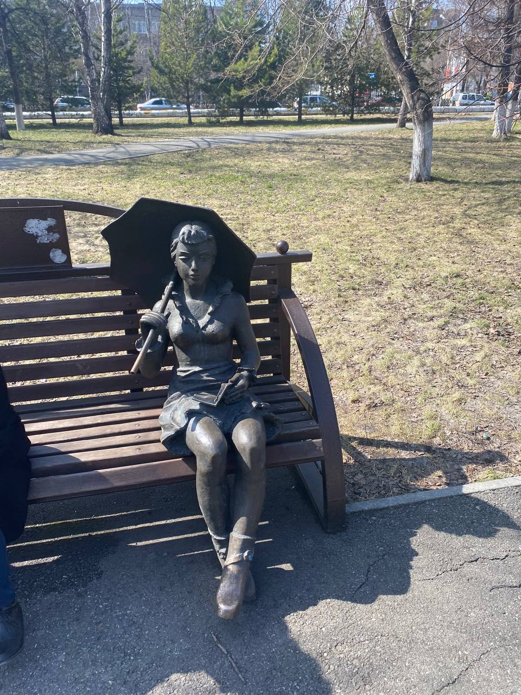

Достопримечательности СибГиу
Раскажем немного о нашем Вузе.
ㅤВуз был создан 23 июля 1930 года решением Совета народных комиссаров СССР и Центрального Исполнительного Комитета СССР на базе специальности «Металлургия чёрных металлов» Томского технологического института для подготовки профессиональных кадров для строящегося Кузнецкого металлургического комбината.
ㅤПрежнее название Сибирский государственный институт чёрных металлов (1930—1933) Сибирский государственный металлургический институт имени С.A
Мемориальный комплекс «Черный тюльпан»
Установлен в одном из скверов Новокузнецка в честь жителей города, погибших в ходе вооруженных конфлитов в "горячих точках". Идея его создания впервые возникла после окончания войны в Афганистане, затем на протяжении довольно длительного периода первоначальный проект несколько раз видоизменялся. Он был установлен летом 2007 года.
Монумент представляет собой высокую стелу, нижнюю часть которой составляют ступеньки, которые ведут с конструкции из каменных глыб. На черных гранитных досках выгравированы имена солдат, павших жертвами локальных международных конфликтов и войн. В верхней части каменной конструкции возвышается черный тюльпан, а венчают композицию крест и колокол. На разных сторонах монумента высечены памятные надписи "Родина, люби нас так, как мы любим тебя", "С нами Бог, Россия и наше Братство". Памятник посвящен воинам-новокузнечанам, погибшим в Афганистане, Чечне и других локальных войнах. Замысел памятника родился в ООО «Архитектурно-планировочная мастерская» у генерального директора Александра Николаевича Бричева и главного автора проектов мастерской Анатолия Петровича Митрофанова в конце восьмидесятых. Идея победы жизни над смертью выразилась символическим знамением победы - крестом и колоколом памяти.
Мемориальный комплекс «Черный тюльпан»

Русская Православная Церковь, Кузбасская митрополия. Он был открыт в 2002 году при Сибирском Государственном индустриальном университете, в одном из учебных корпусов.
Храм прп .Сергия Радонежского расположен в самом центре г. Новокузнецка и является по сути домовым храмом Сибирского государственного индустриального университета. Связь по телефону: +7 (3843) 74-09-70
МЕЖВУЗОВСКИЙ СТУДЕНЧЕСКИЙ КАМПУС "КУЗБАСС"
Камни заложили в двух городах, где будут расположены корпуса кампуса: в Кемерове и Новокузнецке. В областной столице городок построят на набережной
Томи, недалеко от культурно-образовательного кластера и Олимпийского парка. Южная площадка появится на базе Сибирского государственного индустриального университета. Там не только будут приведены в порядок действующие здания вуза, но построены новые.
Памятник студентам

Композиция включает в себя две скульптуры: студента в очках и кипой книг в руках и студентку, сидящую с зонтом на одной из лавочек. На спине молодого человека с книгами располагается надпись СибГИУ.
В знак уважения перед заслугами Николая Михайловича у нас в университете, при участии наших работников и студентов, реализован уникальный проект, который мы назвали «Ректорская «Волга». Была проведена реставрация служебного автомобиля Николая Михайловича - это легендарная «Волга» ГАЗ 3102. С 2001 по 2005 годы автомобиль был ректорским, а впоследствии до 2020 года эксплуатировался в составе автомобильного парка университета. Более 500 000 км пробега, почти 20 лет автомобиль верой и правдой служил университету. В эти праздничные дни вуз открыл этот замечательный арт-объект и передал «Ректорскую «Волгу» как артефакт, связывающий прошлое, настоящее и будущее, в качестве особого экспоната в музей истории СибГИУ.